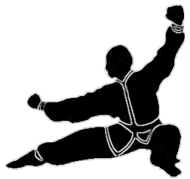

Anyone who thinks stances are unimportant,
should try firing a cannon from a canoe.
Although they are literally the foundation on which everything else is built, stances are probably
the least understood of all martial art basics. Perhaps the biggest reason for this is that
too many of us take stances for granted. We learned them as beginners. They were drilled
into us. Most of us, however, simply mimicked our teachers, not analyzing what we were doing.
This is because during early training, analysis is the furthest thing from the student's mind.
Just trying to perform to the instructor's satisfaction is the immediate goal. Besides, stances
are simple. Right?
Simple? Perhaps, but outward simplicity is rarely an accurate measure of importance.
The stirrup, for example, was a simple addition to the saddle, but any historian will tell you
that its impact on the course of Western history is significant. Stances are like that —
simple, but with an importance far surpassing their perceived simplicity.
|
While arguments may be vigorously raised to the contrary, there are very few (if any) really
classical or traditional stances. This is because, like everything in the
martial arts, stances have evolved and changed. Consider the horse stance.; Shotokan
stylists today generally use a horse stance that is both wider and deeper than that practiced
by Funakoshi (Shotokan's founder). The same is true for front, back, and cat stances.
Stance theory in Shotokan has shifted from a preference for mobility to one that values stability.
Since Shotokan is often identified as a "traditional" art, its wide-base, stability oriented,
rooted-to-the-ground stances are likewise identified as traditional stances.
Unfortunately the label is an erroneous one, for there are a number of "traditionalist" styles
that use relatively narrow stances. For this reason, I will avoid the traditionalist label
in favor of the word, classical.
|

Classical Back Stance
|
If traditionalist is an inaccurate label, so too, is "non-traditionalist" (and for many of the
very same reasons). A better term, and one I will use, is contemporary.
For our purposes, then, contemporary stance theory is one that favors narrower, boxer-type
stances (frequently on the balls of the feet), preferring mobility to stability.
(See how confusing such labels become? As I said before, early Shotokan stances were
generally narrow.)
Dual Purpose
Despite considerable disagreement on a variety of issues, both sides (classical and contemporary)
agree on one thing: namely, that a fighter's power is directly related to the correct use of stances.
Additionally, stances also affect the body's reaction when absorbing a blow. Any stance, then,
classical or contemporary, should do two things: maximize firepower and minimize vulnerability.
Obviously, there are trade-offs. For example, some stances are defense oriented whereas others
are more offensive, but the underlying dual purposes remain the same.
Now some argue that real power (using hand strikes, for example) only come from the time-tested
classical stances. They believe the contemporary, boxer-type stances are less efficient.
Let us examine the classical forward, front, or bow stance, and compare it to the stance Americans
more frequently use when actually fighting — the narrower, boxing-type front stance
(click here
for an excellent article on the evolution of boxing stances by Ken Pfrenger).
For simplicity, I will refer to the classical, rear-leg-locked front stance
as a hard-bow, and the narrower, back-leg-bent contemporary stance as a soft-bow.
Maximizing Firepower
The classical hard-bow is believed to be an effective fighting stance, able to generate greater
power than the contemporary soft-bow, because of the strong base it provides.
It is true that the classical stance has proven itself in combat; however, it is not true that
it can generate greater power than the contemporary stance. In fact, quite the opposite
is true. Done correctly, the soft-bow renders significantly greater power than that
generated from the hard-bow. Here's why.
Power from any strike comes largely from the hips and is proportionate to the degree of rotation
achieved. Since the narrower soft-bow allows for greater rotation of the hips, it increases
the stance's power potential. Couple this with the fighter's body motion simultaneously
driving toward the target (called "directional harmony" by the late Ed Parker), and you have
a substantial increase in power. The classical stance, rooted to the ground, cannot
use the body's momentum in conjunction with the motion of a strike. Which brings us to another,
equally compelling reason for preferring the soft-bow in combat: its ability to absorb blows.
Minimizing Vulnerability
In an extended fight, it is unrealistic to expect to block or avoid an opponent's every strike.
Realistically, it is better to expect to be hit. Expect to be hit, expect to go down, and
expect it to really hurt. If you are fortunate enough to escape relatively unscathed, great!
If, on the other hand, you are hit, the soft-bow significantly reduces your chances of sustaining
a serious injury.
The hard-bow, on the other hand, actually increases the fighter's vulnerability because the deeper,
wider, back-leg-locked stance allows little if any yielding to the attacking force.
Conversely, the narrower, more flexible stance, like the reed in the wind, yields to the blow,
thereby reducing the energy absorbed. Whenever there is a possibility of being hit, then,
the narrower, flexible soft-bow is better than the solid hard-bow.
This line of reasoning — that wider, stronger stances are less
desirable than relatively taller, more mobile postures — is not simply a contemporary Western
idea. It has proponents and ancient roots in many Asian fighting arts as well.
One of the principles taught by Professor T.Y. Wong long ago was as follows:
"Never keep the rear leg locked and stiff —
keep the leg bent
(even if only slightly)." 1
|
Lao-Tzu, the fifth century B.C. Chinese philosopher, acknowledged the fundamental truth of
this when he said,
"Softness triumphs over hardness, feebleness over strength.
What is malleable is always superior over that which is immovable."
|
These axioms reinforce the contention that flexibility is the key to mobility, and
mobility is the secret to minimizing vulnerability.
Momentum from Mobility
Football provides some examples that might help us better understand the mobility versus stability
issue. Compare a lineman's position and task to a linebacker's. Generally, linemen are
larger and heavier than linebackers. The lineman's target — his opponent — is usually just
inches in front of him. At the snap of the ball, contact occurs immediately.
Being that close to his opponent, the lineman develops practically no momentum and must stop his
opponent's attack — or press his own — with technique and brute strength. The linebacker,
on the other hand, is much farther away from his target. He is also smaller and lighter than a
lineman. However, the linebacker uses momentum to carry his lesser mass to his target.
All other things being equal, the impact or energy applied to the opponent by the linebacker is
significantly greater than the lineman's because the linebacker's momentum more than makes up for
his lack of mass.
Need For Speed
Force is often erroneously reported as the product of mass times the square of velocity.
Actually, kinetic energy (the energy possessed by a moving object) is one-half mass times
velocity squared (1/2m v2). When a moving object collides with another object,
energy and momentum are transferred. The energy given up by the moving object is IMPACT.
Impact is directly proportionate to the square of velocity (or speed). What this means is
that a small increase in velocity (the linebacker's momentum) yields a greater increase in energy,
or impact, on a target. It is the linebacker's mobility that allows him to develop momentum,
and it is his momentum that enables him to hit harder than the larger lineman.
In fairness, all this makes the linebacker's task more complex than the lineman's.
For the linebacker, distance, timing, speed, position, and technique are much more critical
because all of these factors must come together at precisely the right instant if he is to
stop or repel his man — especially when his opponent is larger or stronger. Because
of this, the linebacker's approach and technique require greater coordination and precision.
How It Relates
How does all of this relate to stances? First, like the lineman's tactic, the strength
of the classical hard-bow lies in its simplicity and stability. Punching proficiency from
the classical stance (firmly planted, back leg locked, rear foot flat) is more quickly acquired
than in the narrower, back-leg-bent, ball-of-the-foot, boxing-type stance. However, as with
the lineman, the classical stance's lack of momentum actually limits its power potential.
The narrower soft-bow, on the other hand, increases mobility because the feet are closer and the
knees bent. Being narrower, it also provides better groin protection. Some may feel
that while it is a safer stance, those factors that make it mobile also make it weaker. But they
erroneously confuse rigidity with strength. Stances need not be rigid to be strong.
A boxer's stance is strong for his purposes, but seldom is it stiff or rigid.
A strong stance is simply one that provides a good base for effective technique — be it
punching, kicking, throwing, or anything else. The fact is that, taught correctly,
the soft-bow can generate much more power than the hard-bow — and with less risk to the fighter.
This is not to say that there are no disadvantages to the narrower stance — there are.
Punching proficiency from the soft-bow, for example, takes longer to attain.
The factors that make the stance effective — motion, momentum, directional harmony, and timing — are more
slowly learned. In this respect, the narrower, more mobile stance can be likened to our linebacker.
For his technique to work, a lot of factors must all come together at just the proper instant.
However, once learned and properly applied, a blow delivered from the soft-bow stance, like a
linebacker's hit, is devastating.
| |
|
Conclusion
|
|
|
|
|
Teach the student the wider classical stances, but teach him the narrower boxing-type as well.
The classical hard-bow with its locked back leg is useful because it strengthens and conditions the legs,
develops stability, and creates an excellent platform on which to build. If for no other reasons
than these, classical stances should be taught. There is, however, another reason classical stances
should be taught — the beginning student will never fully appreciate the subtler points of the narrower
(back leg bent) soft-bow without a firm grounding in and understanding of the basic hard-bow.
In forms training teach both, placing a greater emphasis on the wider
hard-bow for the strength and conditioning it develops (extremely valuable attributes in a fight).
For fighting, however, where quickness and mobility are required, emphasize the narrower, more flexible,
boxer-type soft-bow. This use of contemporary stances in fighting versus the classical stances in
forms training is an excellent example of where forms training and fighting need not be contradictory.
Both have something practical to contribute; both serve the martial artist well.
|
|
|